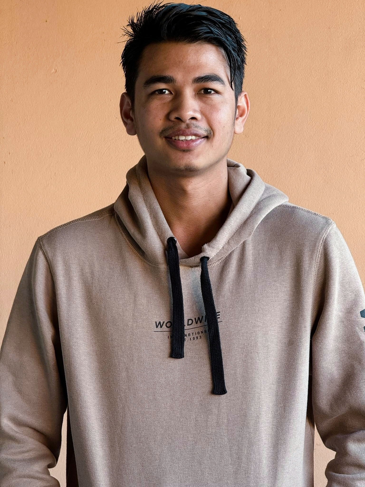
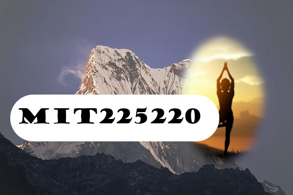

Student

I'm Indra, a dedicated enthusiast in cyber security and computer programming. My passion lies in fortifying digital landscapes through rigorous security practices and crafting elegant software solutions that empower individuals and organizations. I'm committed to the ever-evolving journey of learning and innovation in the dynamic realms of cyber security and software development. I want to become a software Engineer in Future.
Skills and Education

Steps for collage creation
Step 1: Open the GIMPEnsure that we have a blank canvas set to the exact dimensions of 600 pixels in width and 400 pixels in height.
Step 2: Set the Main Background Create the main background of collage based on the provided sample. This background should establish the overall theme or style of your collage.
Step 3: Add the Yoga Posture BackgroundSelect an appropriate Yoga posture image or illustration that fits design. Ensure that the background of this image blends seamlessly with the main background.
Create an elliptical selection around the Yoga posture, making sure it looks natural within the collage.
Step 4: Feather the Elliptical SelectionApply a feathering effect to the elliptical selection. Use the specified feather value (as mentioned in assignment guidelines) to ensure a smooth transition between the Yoga posture and the background.
Step 5: Create the Rounded RectangleAdd a rounded rectangle shape to serve as the background for student ID number for example, MIT225220. Make sure the rounded rectangle has a feathered edge of 25 pixels.
Step 6: Insert the Student ID NumberPlace student ID number on top of the rounded rectangle background. Use the following specifications for the ID number:
Font-family: Goudy Stout (or a Serif-bold equivalent).
Font size: 42 points.
Font color: Black.
Step 7: Save the Collage
Save collage in a suitable image format (e.g., JPEG or PNG) with a clear and descriptive file name.
Steps for video creation and importance of transition
copyright © Indra my project 2023. All rights are reserved.